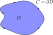
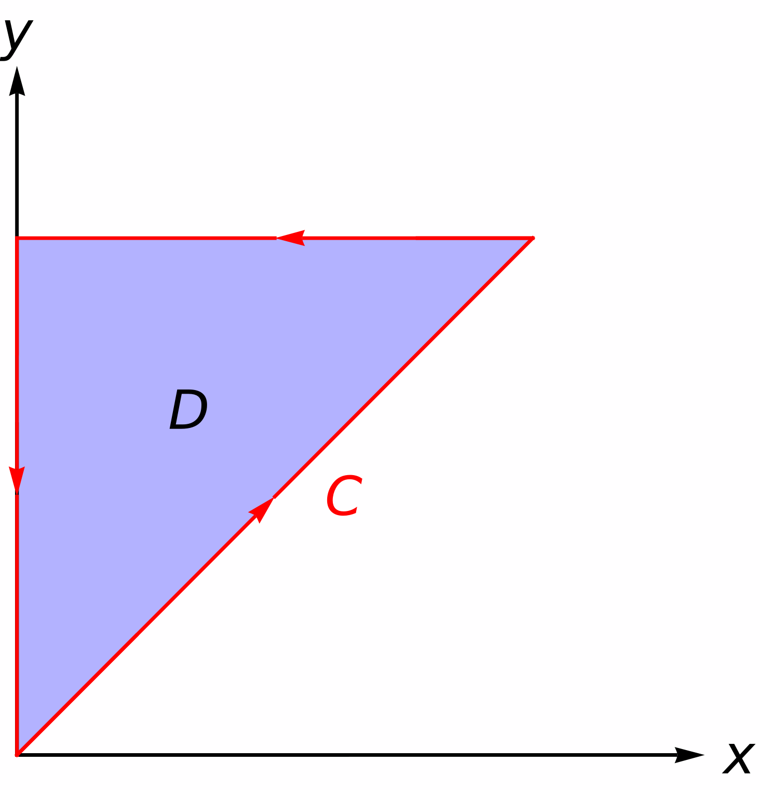
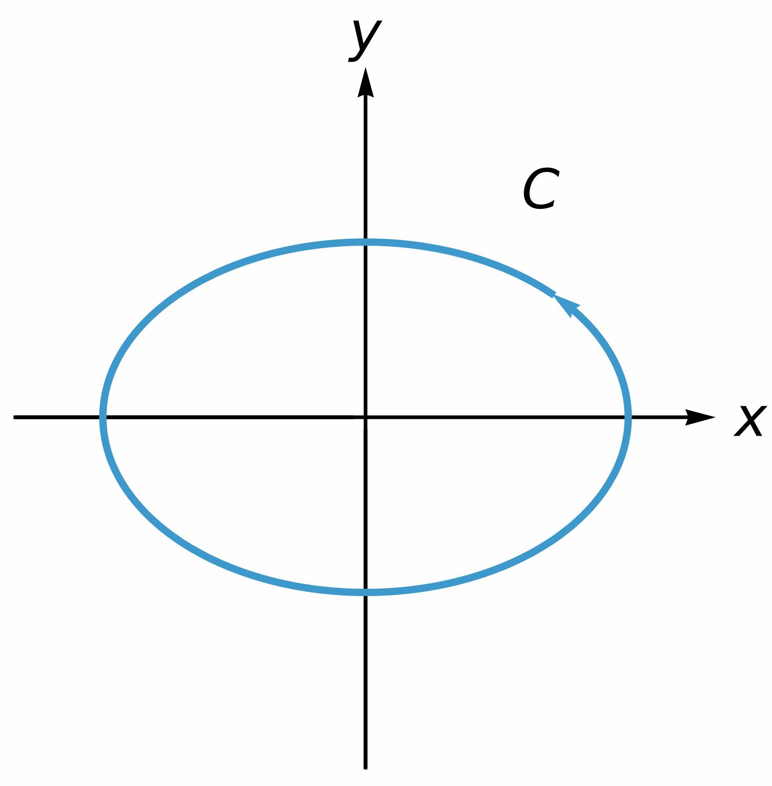
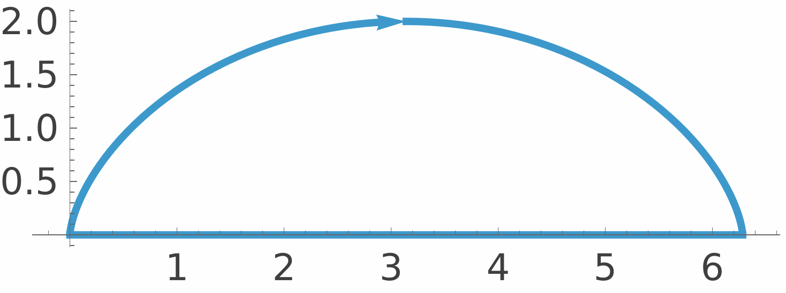
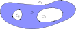
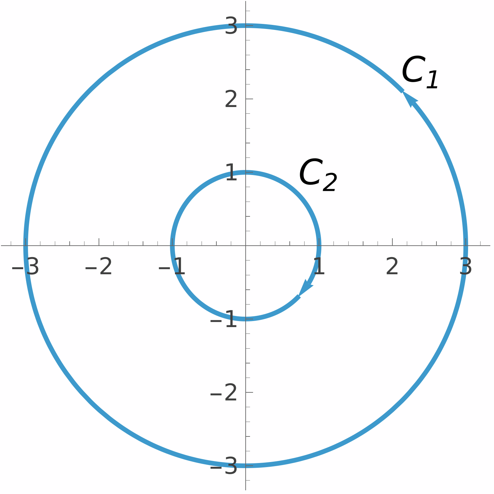

Green's Theorem
Recall from the previous section that line integrals of conservative vector fields have their own Fundamental Theorem of Calculus, which relates a line integral of the form \[ \int_C\nabla f\,\cdot\,d\bf{r} \] with the values of the potential function $f$ at the endpoints of the curve $C$ along which we are taking the integral.
Here we will give an analog of the fundamental theorem of calculus for double integrals, which will allow us to evaluate some double integrals on a region of the form $D\subseteq \RR^2$ by studying the behavior of a vector field on the boundary of $D$.
Basic Formulation of Green's Theorem
Let us start by considering a simple closed curve $C$ in the plane which is piecewise smooth. The fact that $C$ is simple means that it has no self-intersections. The curve $C$ then encloses a bounded region $D$ in such a way that $C$ coincides with the boundary of $D$.
To denote that $C$ is the boundary of $D$, we will use the symbol \[ C=\partial D. \]

We are going to choose an orientation on $C=\partial D$ that is compatible with the region $D$:
The pictures below give an example of the positive and negative orientation on a closed curve.
Positive orientation
Negative Orientation
With all of this in mind, we can now state a first version of the so-called Green's theorem.
Observe that the left hand side involves the line integral of $\bf{F}$ on the closed curve $\partial D$. If we want to emphasize the fact that $\partial D$ is close, it is customary to denote the line integral of $\bf{F}$ along $\partial D$ as \[ \oint_{\partial D}\bf{F}\,\cdot\,d\bf{r}. \] The right hand side involves a double integral over the whole region $D$, and the integrand is comprised of partial derivatives of the components of $\bf{F}$, showing that the formula in Green's theorem is essentially a two-dimensional version of the Fundamental theorem of calculus.
Solution.
The curve $C$ is closed and simple, and the region $D$ enclosed by $C$ is \[ D=\big\{(x,y)\mid 0\leq y\leq 3,0\leq x\leq y\big\}. \]
Note that the clockwise orientation on $C$ is negative, so $-C$ is positively oriented. Applying Green's theorem (with $P(x,y)=xy$ and $Q(x,y)=y^5$), we obtain \[ \begin{aligned} \oint_{-C}xy\,dx+y^5\,dy = -\iint_Dx\,dA = -\int_0^3\int_0^yx\,dx\,dy = -\int_0^3\frac{y^2}{2}\,dy = -\frac92. \end{aligned} \]

Now, to obtain the line integral with the correct orientation we can simply change the sign of the integral that we just computed: \[ \oint_{C}xy\,dx+y^5\,dy= -\oint_{-C}xy\,dx+y^5\,dy =\frac92. \]
Computing Areas with Green's Theorem
A nice application of Green's theorem is that we may apply it to compute the area of a plane region by setting up an appropriate line integral on its boundary. More precisely, if $D$ is a plane region and $\bf{F}=P\,\bf{i}+Q\,\bf{j}$ is a vector field whose components satisfy \[ \frac{\partial Q}{\partial x}-\frac{\partial P}{\partial y}=1, \] then Green's theorem yields \[ \oint_{\partial D}P\,dx+Q\,dy=\iint_D1\,dA=A(D). \]
There are several options for $\bf{F}$ that we can choose. The most common ones are \[ \bf{F}(x,y)=\langle 0,x\rangle,\qquad \bf{F}(x,y)=\langle -y,0\rangle,\qquad \bf{F}(x,y)=\frac12\langle -y,x\rangle. \]
Solution.
The ellipse $C$ of semiaxes $a$ and $b$ can be parametrized by the vector function $\bf{r}(t)=\langle a \cos t,b\sin t\rangle$, where $t\in[0,2\pi]$. With this parametrization, we are traversing $C$ counterclockwise, and this is the positive orientation for $C$.
We can apply Green's theorem with, for instance, the vector field $\bf{F}=\frac12\langle -y,x\rangle$ to see that \[ \begin{aligned} A(D) ={}& \frac12\oint_C-y\,dx+x\,dy = \frac12\int_0^{2\pi}\big(ab\sin^2 t+ab\cos^2t\big)\,dt \\={}& \frac12\int_0^{2\pi}ab\,dt = \pi ab. \end{aligned} \]

Find the area of the region $D$ that is enclosed between the cycloid $C$ and the $x$-axis.

Solution.
The boundary $\partial D$ of the region $D$ is comprised of two curves: the cycloid $C$ and the line segment $L$ from $(0,0)$ to $(2\pi,0)$. If we take the vector field $\bf{F}(x,y)=\langle -y,x\rangle$, then Green's theorem yields \[ A(D)=\oint_{\partial D}\bf{F}\,\cdot\,d\bf{r} = \oint_{\partial D}-y\,dx. \] Note that with the parametrization $\bf{r}(t)$, $C$ is not positively oriented, so the right hand side in the above integral is actually \[ A(D)=-\int_C-y\,dx+\int_L\,-y\,dx = \int_Cy\,dx-\int_Ly\,dx. \] In addition, note that $y=0$ on $L$, so the second integral is zero and we deduce that \[ \begin{aligned} A(D) ={}& \int_Cy\,dx = \int_0^{2\pi}(1-\cos t)(1-\cos t)\,dt = \int_0^{2\pi}\,dt -2\int_0^{2\pi}\cos t\,dt + \int_0^{2\pi}\cos^2 t\,dt \\ ={}& 2\pi+\pi=3\pi. \end{aligned} \]
General Formulation of Green's Theorem
For now, we have only discussed Green's theorem for regions that are enclosed by a simple closed curve. What if we work with a more general region whose boundary is comprised of more than one curve? In this case, Green's theorem still works:


Solution.
Observe that the curves $C_1$ and $C_2$ are bounding an annular region $D$, and both curves are positively oriented relative to $D$. Since the integrand in both terms is the vector field $\bf{F}=\big\langle 2y-x^2,7x+y^2\big\rangle$, we can apply Green's theorem to obtain that \[ I=\iint_D (-2x-2y)\,dA. \]
We can change to polar coordinates in order to find the above double integral. Indeed, the region $D$ is described by the inequalities $1\leq r\leq 3$ and $0\leq \theta\leq 2\pi$, where $(r,\theta)$ denote polar coordinates, so \[ \begin{aligned} \iint_D (-2x-2y)\,dA ={}& \int_0^{2\pi}\int_1^3(-2r\cos\theta-2r\sin\theta)r\,dr\,d\theta = \int_0^{2\pi}\int_1^3-2r^2(\cos\theta+\sin\theta)\,dr\,d\theta \\={}& -\frac{52}{3}\int_0^{2\pi}(\cos\theta+\sin\theta)\,d\theta =0. \end{aligned} \]